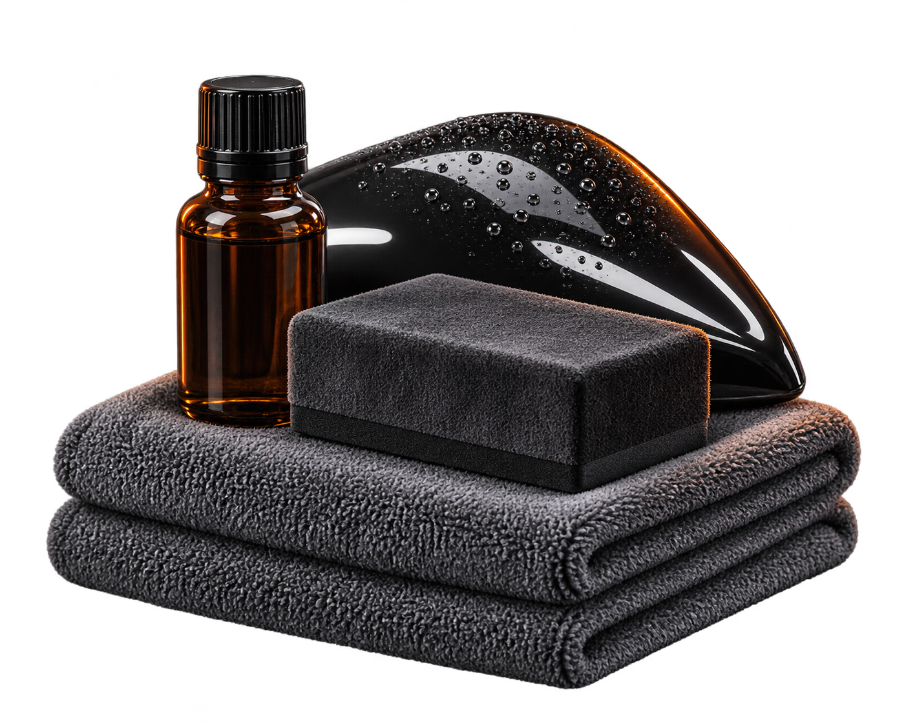
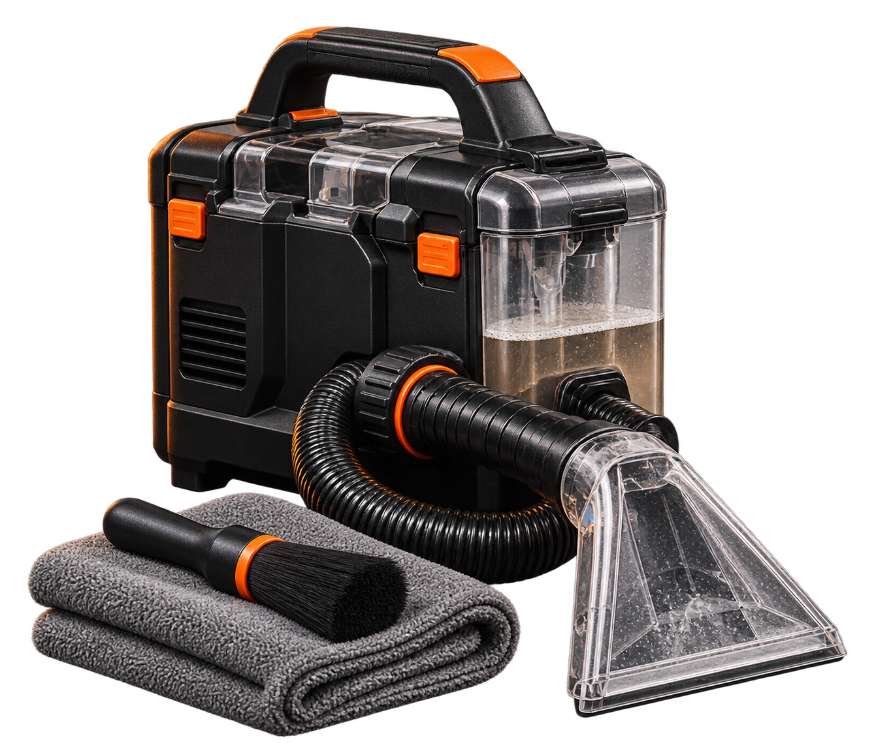
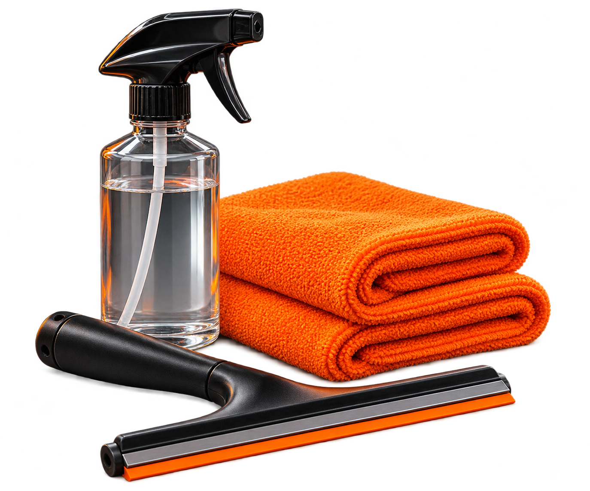

Coleção visual / V2
A mesma identidade. Novas possibilidades.
O cuidado está
em cada detalhe.
Recortes com fundo transparente para compor as seções de serviços. Preto, grafite e laranja, com a textura e o acabamento das imagens originais.






Preto #0B0B0C
Grafite #17191C
Laranja #FF6A00
Prata #F2F3F4